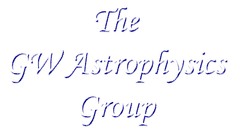

|  |
Colloquia |
|
Speakers in the GW Astrophysics Colloquia are asked to designed their talk for the non-specialist, including both undergraduate and graduate students who have an interest in various aspect of astronomy. Unless otherwise noted, our colloquia take place on Thursday afternoons from 4:00 pm to 5:00 pm in Corcoran 101. Coffee is served at 3:45pm. |
|
2014 Feb 20
Dr. Zaven Arzoumanian, NASA GSFC
Neutron Star Interior Composition Explorer (NICER) Mission
2013 Nov 14
Dr. Alexander Kashlinsky, NASA GSFC
Probing the emergence of the
Universe from Dark Ages
2013 Oct 17
Dr. Nick Konidaris, California Institute of Technology
The SED Machine
2013 Oct 3
Prof. Stephen Eikenberry, University of Florida
Observations of Neutron Stars
with Orbital Observatories
2013 Mar 21
Prof. George Pavlov, Pennsylvania State University
Observations of Neutron Stars
with Orbital Observatories
2013 Jan 17
Dr. Chryssa Kouveliotou, NASA Marshall Space Flight Center
(A special presentation in the Walker Lecture Series, designed to encourage women in physics)
2012 Nov 29
Brian Humensky, Columbia University and Nevis Labs
Particle Astrophysics with VERITAS and CTA
2012 Nov 08
Dr. Binbin Zhang, Penn State University
A Comprehensive Study of High-Energy Data of Gamma-Ray Bursts
2012 Oct 18
Benjamin Owen, Penn State University
The Long and Short of the Matter: Gravitational Waves from Neutron Stars
2012 Sep 20
Alessandra Corsi, The George Washington University
Multi-messenger signatures of gamma-ray bursts: a tool to unravel the mysteries of these cosmic explosionsî
2012 Mar 29
Alessandra Corsi, California Institute of Technology
The fascinating physics of Gamma-Ray Bursts: progenitors, fireballs, and prospects for multimessenger astronomy
2012 Mar 28
Oleg Kargaltsev, University of Florida
Multi-wavelength view of pulsars and pulsar-wind
nebulae
2012 Mar 27
Teddy Cheung, Naval Research Laboratory
The Fermi Large Area Telescope Reveals a Diverse Population of Galactic GammaÅ]ray Binaries
2012 Mar 22
Eduardo Rozo, University of Chicago
Cluster Cosmology with Large Photometric Surveys
2012 Mar 21
Bret Lehmer, NASA Goddard Space Flight Center
The Formation and Evolution of Accreting Binaries: Insight from Multiwavelength Observations of Galaxies both Near and Far!
2011 Nov 03
Jon Hakkila, College of Charleston, South Carolina
Correlated Properties of Gamma-Ray Burst Pulses: From Prompt Emission to the Optical Afterglow
2011 Apr 21
Tod Strohmayer, NASA/GSFC
X-ray Polarimetry: Opening a New Astrophysical Window
2011 Apr 07
Paulo Bedaque, Univ. Md
Neutron Stars and the Densest Matter in the Universe
2011 Mar 24
Chris Wrede, Univ. Washington
Nucleosynthesis in Classical Novae
2011 Feb 17
Kara Hoffman, Univ. Md
South Pole Neutrino Telescopes
2010 Nov 11
Ronald Gillilard, Space Telescope Science Inst.
Asteroseismology and Planet Detection Results from the Kepler Mission
2010 Oct 28
Michael Corcoran, NASA/GSFC
Colliding Winds and the Most Massive Stars
2010 Oct 26
Bethany Cobb, GW Honors Program/GW Physics Dept.
Clues to Gamma-ray Burst Progenitors Through Observations of Afterglows and GRB-Supernovae
2010 Oct 21
Charles Dermer, Naval Research Laboratory
The Fermi Gamma-Ray Space Telescope, Relativistic Jet Sources, and the Origin of Ultra-High Energy Cosmic Rays
2010 Sep 23
Chris Fryer, Los Alamos Nat. Lab
Understanding Core-Collapse Supernovae in the Transient Era
2010 Apr 22
Julie E. McEnery, NASA/GSFC
A New View of the High-energy Gamma-ray Sky with the Fermi Gamma-Ray Space Telescope
2010 Feb 25
Glen MacLachlan, GW Dept. of Physics
Fast Wavelet Transforms and Signal Analysis
2009 Nov 10
Stefan Immler, NASA/GSFC & Univ. Md
Energetic Explosions in the Universe: Highlights from Five Years of Swift Satellite Observations
2009 May 27
Alaa Ibrahim, Mahmoud Hanafy, Fayoum University, Egypt
A Phenomenological Study of Short Gamma Ray Bursts with Extended Emission Observed by NASA's Swift Mission
2009 Apr 30
David Burrows , Penn State Univ.
Gamma-Ray Bursts: Black Hole Births and Cosmic Beacons
2009 Apr 16
Martin Laming, Naval Res. Lab.
How Did Cassiopeia-A Explode? A Chandra Very Large Project
2008 Nov 06
Sinha Manodeep, Vanderbilt Univ.
Hot Halo Gas in Numerical Simulations of Galaxy Mergers
2008 Oct 02
Ramesh Narayan, Harvard Univ.
Astrophysical Blck Holes
2008 Sep 25
Stephen Zepf, Michigan State
Extragalatic Globular Clusters and Their Black Hole and Neutron Star Binary Systems
2008 Apr 10
Raju Venugopalan, Brookhaven National Laboratory
How the hottest matter on earth is created, what it looks like, and what it may tell us about the early Universe
2008 Apr 03
Michael Salamon, NASA - SMD
NASA's Missions to Explore the Origin and Evolution of the Universe, and to Hear Its Voices
2008 Mar 13
Abe Falcone, Penn State
Lifting the Shades on the TeV Gamma Ray Window to the Universe
2008 Feb 22
Michael Stamatikos, NASA/Goddard
Exploring GRB Astrophysics via a Correlated Broad-Band and Multi-Messenger Paradigm
2008 Feb 08
Matthew Burger, NASA/GSFC
Saturn's Surprising Satellite: The Enceladus Water Plume and Torus
2007 Nov 02
Rachel Osten, NASA/GSFC
New Insights into the Physics of Stellar Flares
2007 Oct 05
Arsen Hajian, U.S. Naval Observatory
A Way to Detect Earth-Mass Planets
2007 May 10
Rex Tayloe, Indiana Univ.
Neutrino Oscillation Results from the MiniBooNE Experiment
2007 Apr 05
Steve Ritz, NASA/GSFC
Gamma-Ray Astronomy
2007 Mar 08
Edward Wollack, NASA/GSFC
WMAP
2007 Feb 08
Jean Cottam, NASA/GSFC
Accretion around Neutron Stars
2006 Nov 17
Frederick C. Bruhweiler, Catholic Univ.
Quasars and Iron in the Early Universe
2006 Apr 20
John Mather, NASA/GSFC
The James Webb Space Telescopy and the Future of Space Astronomy
2006 Apr 13
Richard Mushotzky, NASA/GSFC
The Accretion History of Massive Black Holes
2006 Apr 06
Joan Centrella, NASA/GSFC
Binary Black Holes, Gravitational Waves, and Numerical Relativity
2006 Mar 30
Randall Smith
NASA/GSFC
Streetlights on a Foggy Night: Measuring Interstellar Dust with X-rays
2006 Jan 26
Alaa Ibrahim, Univ. of Cairo
Connecting Quarks with the Cosmos
2005 Dec 05
Neil Gehrels, NASA/GSFC
Gamma-Ray Burst Discoveries by the Swift Mission
2005 Dec 02
William Phillips, NIST
Time, Einstein, and the Coldest Stuff in the Universe
2005 Nov 21
Marc J. Kuchner, NASA/GSFC
Water Planets, Carbon Planets, and the Origin of the Earth's Oceans
2005 Oct 31
Michael Turner, National Science Foundation
Beyond Einstein: Profound Mysteries and New Challenges
2005 Oct 24
John Hawley, Univ. of Virginia
General Relativistic Magnetohydrodynamic Simulations of Black-Hole Accretion Disks
2005 Sep 12
Alaa Ibrahim, Cairo Univ.
The Universe through Einstein's Eyes
2004 Feb 19
Samar Safi-Harb, Univ. of Manitoba
Life after Stellar Death: A Zoo of Pulsars and Supernova Remnants
2003 Apr 24
Berndt Mueller, Duke Univ.
Understanding the Universe: How the Relativistic Heavy Ion Collider is Helping Us
2002 Apr 18
Eric Richard Christian, NASA/Goddard
A TIGER in Antarctica
These web pages are maintained by the GW Astrophysics Group. Report questions, problems and broken links to Prof. Oleg Kargaltsev.
|